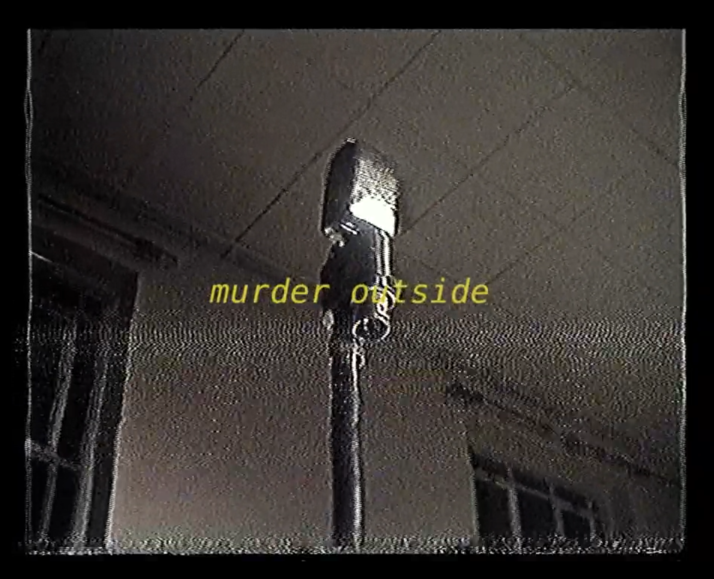

Published March 20, 2026

There's a curious electrical hum that seeps out of crumbling saw-dust pubs across London, reminiscent of the outlaw chic and hoodlum existentialism of Exile On Main Street.
That whole schizo crazy world of good old rock n' roll pulsates from the guitar amps of The Roves. Easily the most brilliant songwriters in Britain right now, they are hardly known at all. But listen to Needle Factory and it'll be difficult to fault that credential.
They have attracted a cult following of the leaders of many of London's finest bands, and they don't want you to know. The Roves gigs are where they go to be anonymous and let loose out of the way of the cameras.
Fresh out of the recording studio with Geese's Cameron Winter at Strongroom Studios, their next performance is in the air but they will play again soon.
London is screaming desperately for something to follow the Black Midis and the Black Country New Roads and it seems they've settled on 70s rock n' roll to fill that void.
In a political climate much like that of the 60s, with crystal clear crackdowns on pedestrian Palestinian protestors and elections known merely to swap one dusty old elite with another, it's no wonder The Roves are being chosen as the soundtrack to this carbonated youth-led revolt.
Given the blazing oversaturation of quasi-tribute bands to the Windmill Brixton boom, no one in London is yearning for yet another band sporting incoherent honking baritone saxophones over glitch-bubblegum autosynth kitch.
Leave that to the fin-tech bros 10 years behind the demand curve, the rest of us are sliding down an indifference curve taking us somewhere else entirely. The Roves are offering a glimpse of a different future, distorted with brighter tones and devoid of your usual gloom-core cringe straight from the office in Canary Wharf.